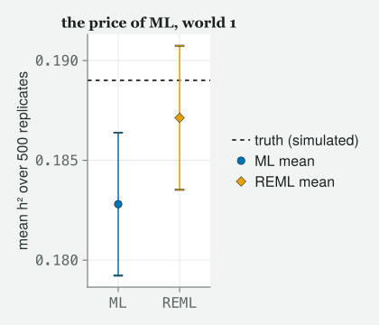

A one-generation pedigree, a matrix of ones and halves and quarters, and a heritability that lost most of itself the moment somebody put the nest the chick grew up in into the model.
Draft
All ten classes of version 1 are drafted and their code runs end to end (1–10), with Appendix A, the preface and the coda. Every number and figure on this page was produced when the site was built; the book itself is not written.
Engines DRM.jl 0.7.1 at 4d9248f88 (Julia 1.10.0) · drmTMB 0.7.0 (R 4.6.0) Provenance Every Julia cell in this chapter was run when the site was built and its output printed, except one that displays a call without running it, and including one that ends in an error message on purpose. The one R block was run once by hand, on the date shown, with R, by the script kept at data/ch10/ch10-r-box.R, and is labelled as such. Caveat The data are real: 1950 Lundy Island house-sparrow chick records with their sire and dam, of which the 1675 that carry a mass are used here, read directly from data/2012/SparrowSurvival.csv (provenance in data/2012/README.md), plus data/2012/BodySize.csv for the Class 6 repeatability. Nothing here is invented; the simulated quantities are drawn from models fitted to those files, from stated seeds, in cells you can read.
What this chapter is not. It is not a course in quantitative genetics, and it is not the chapter on phylogenetic comparative methods or meta-analysis — those two are the same statistical problem in different clothes and they belong together in another book. This is the last rung of version 1’s climb, and it frees one thing: the assumption that random effects are independent of each other.
Objectives
By the end of this class you should be able to:
Say what a relatedness matrix is, write down the rule that fills it in for a one-generation pedigree, and check a few of its entries by hand.
Fit an animal model with animal(1 | id) and a supplied A, and read the additive genetic variance off the fit.
Compute a narrow-sense heritability as a ratio of variance components, with an interval, and say what the denominator contains.
Name the thing full sibs share that is not genes, fit it, and report what happens to h² when you do.
Decide, by simulation rather than by hope, whether your design can tell those two apart at all.
Recognise that a pedigree, a phylogeny and a map of sites are the same model with a different matrix in it, and name the engine’s marker for each.
The class
Itchy’s office, 9:00 am. It is the last hard week, so JARO is here, with
coffee and a printed pedigree. TOTO has brought a laptop and a
hypothesis. MOMO has brought the data file. EDDIE has read ahead, which
is his habit and today it will cost him.
Itchy
Class 6 said rows are not strangers, and gave every bird its own nudge.
Class 7 let the nudges have slopes. Class 9 let them live inside a coin
flip. Every one of those chapters made the same quiet promise, and today
we break it. Momo, you have the file open. Read me the promise.
Momo
u_j ~ N(0, σ_u²), independently for each j.
Itchy
Independently for each j. Every group drawn fresh, knowing
nothing about any other group. That is a lie about sparrows and it is a
lie about species and it is a lie about places, and today we replace it
with a matrix.
usingRandom# tools/figures.jl includes tools/theme_itchy.jl itself, so one include does both.include("../tools/figures.jl")usingDRM, DataFrames, CSV, Statistics, LinearAlgebra, Printf, CairoMakieimportDistributions# qualified: DRM exports its own Poisson, Binomial, …set_theme!(theme_itchy(:light))raw = CSV.read("../data/2012/SparrowSurvival.csv", DataFrame; missingstring = ["NA", ""])println("rows, columns: ", size(raw))println(describe(raw, :nmissing, :eltype))first(raw, 6)
There is a Dad column and a Mum column, and
that is the whole chapter. Every one of these chicks has a named sire
and a named dam, so the file does not merely tell you which chicks are
in a group; it tells you how much any two of them are
related. Drop the rows with no mass and count what is left.
chicks with a mass : 1675 (of 1950 rows)
named sires : 126
named dams : 127
sire-dam pairs : 208
broods : 503
cohorts : 2003, 2004, 2005, 2006
1×5 DataFrame
Row
variable
mean
std
min
max
Symbol
Float64
Float64
Float64
Float64
1
Mass2
3.62191
1.191
1.2
9.6
Itchy
1675 chicks, 126 fathers, 127 mothers. Nobody is missing a parent, which
is rarer than it sounds and is why we are using this file rather than a
better one. Toto, what is the response?
Toto
Mass2. Chick mass, in grams, at the standard early
weighing.
Itchy
Chick mass, and the question is the oldest question in the room:
how much of the difference between one chick and another is
inherited? Not “is there a difference” — Class 6 taught you
that a p-value about a variance is a trap. How much. Count the
sibships first, because the answer lives entirely in them.
fam =combine(groupby(chicks, [:Dad, :Mum]), nrow =>:k)sort!(fam, :k, rev =true)@printf("full-sib families (a sire-dam pair): %d\n", nrow(fam))@printf(" largest %d chicks, median %d, %d singletons\n",maximum(fam.k), round(Int, median(fam.k)), count(==(1), fam.k))sire_mates =combine(groupby(chicks, :Dad), :Mum => (m ->length(unique(m))) =>:n)dam_mates =combine(groupby(chicks, :Mum), :Dad => (d ->length(unique(d))) =>:n)@printf("sires with more than one mate: %d of %d\n", count(>(1), sire_mates.n), nrow(sire_mates))@printf("dams with more than one mate: %d of %d\n", count(>(1), dam_mates.n), nrow(dam_mates))
full-sib families (a sire-dam pair): 208
largest 48 chicks, median 5, 12 singletons
sires with more than one mate: 59 of 126
dams with more than one mate: 55 of 127
Eddie
So there are half sibs as well as full sibs.
Itchy
There are half sibs as well as full sibs, and that matters more than the
counts suggest. A design with nothing but full-sib families gives you
one number — how alike siblings are — and asks you to believe that all
of it is genetic. Half sibs give you a second number at a different
relatedness, and two numbers at two relatednesses is the beginning of an
argument rather than an assumption.
The matrix that says who is related to whom
Itchy
Here is the object. It is called the additive relationship
matrix and it is written A. One row and one column per
individual. The entry Aᵢⱼ is twice the probability that a gene
drawn at random from i and a gene drawn at random from
j are copies of the same ancestral gene. Jaro, give them the
recursion, because it is one line and it generates everything.
Jaro
Aᵢⱼ = ½(Aᵢ,ₛᵢᵣₑ₍ⱼ₎ + Aᵢ,dam₍ⱼ₎), and
Aᵢᵢ = 1 + Fᵢ, with F the inbreeding
coefficient — the chance that an individual’s two copies of a
gene are copies of one ancestral gene.
Itchy
One line, and every number in the matrix falls out of it once you say
what the founders are. Our founders are the parents, and this file gives
us no parents of parents, so we assume the founders are unrelated and
not inbred. Toto, turn the crank for two full sibs.
Toto
They have the same sire and the same dam, so it is a half of a half plus
a half of a half.
Itchy
Which is a half. And two chicks who share a sire only?
Toto
A half of a half, plus a half of nothing. A quarter.
Itchy
(writes on the board)
With unrelated, non-inbred founders and one generation: A_ij = ¼·1[same
sire] + ¼·1[same dam] for i ≠ j, and A_ii = 1. Full sibs ½, half sibs ¼,
strangers 0.
Itchy
That is not an approximation to the recursion, it is the recursion
evaluated. Build it, and then — this is the part nobody does and
everybody should — check it.
# A_ij = 1/4 * [same sire] + 1/4 * [same dam] off the diagonal, 1 on it.# This is the general recursion A_ij = (A_i,sire(j) + A_i,dam(j)) / 2 evaluated for# ONE generation with unrelated, non-inbred founders -- which is all this file has.sire, dam = chicks.Dad, chicks.MumA = [i == j ? 1.0:0.25* (sire[i] == sire[j]) +0.25* (dam[i] == dam[j]) for i in1:n, j in1:n]offdiag = [A[i, j] for i in1:n for j in (i +1):n]n_full =count(==(0.5), offdiag)n_half =count(==(0.25), offdiag)n_none =count(==(0.0), offdiag)@printf("A is %d x %d, symmetric: %s\n", size(A, 1), size(A, 2), string(A == A'))@printf("pairs at 1/2 (full sibs) : %d\n", n_full)@printf("pairs at 1/4 (half sibs) : %d\n", n_half)@printf("pairs at 0 (unrelated) : %d\n", n_none)@printf("distinct off-diagonal values: %s\n", string(sort(unique(offdiag))))# A = (1/2)I + (1/4)S + (1/4)D, with S and D the all-ones blocks of shared sires and# shared dams. S and D are positive SEMI-definite, so this construction FORCES# lambda_min >= 1/2: the check below cannot fail for a one-generation sib pedigree,# and the 1/2 it lands on is not an arbitrary floor.evals =eigvals(Symmetric(A))n_half_eig =count(v ->abs(v -0.5) <1e-9, evals)@printf("smallest eigenvalue: %.4f (a legal covariance, i.e. positive definite: %s)\n",minimum(evals), string(isposdef(Symmetric(A))))@printf("eigenvalues exactly equal to 1/2: %d of %d\n", n_half_eig, n)
A is 1675 x 1675, symmetric: true
pairs at 1/2 (full sibs) : 11423
pairs at 1/4 (half sibs) : 9911
pairs at 0 (unrelated) : 1380641
distinct off-diagonal values: [0.0, 0.25, 0.5]
smallest eigenvalue: 0.5000 (a legal covariance, i.e. positive definite: true)
eigenvalues exactly equal to 1/2: 1471 of 1675
Momo
Three values and nothing else, which is what the board says there should
be.
Itchy
Three values and nothing else. Now the last two lines. A matrix can only
be a covariance if it never says that some combination of the chicks has
negative variance, and the smallest eigenvalue
is the one number that checks this: positive, and the matrix is a legal
covariance. I want you to notice that here the check cannot
fail. The matrix is a half of the identity plus two blocks of
shared parents, and neither block can drag it below that half — so the
check passes by construction. It is still worth printing, because it
teaches you the reason it passes. Jaro, tell them what that half is.
Jaro
Mendelian sampling. Two full sibs each get half their father’s genes,
but not the same half, and the contrast between them carries
exactly half the additive variance.
Itchy
Exactly half, in every sib pedigree ever written, which is why 1471 of
these 1675 eigenvalues are exactly a half rather than near it. So the
eigenvalue line passes by construction and teaches you one real thing on
its way past. The check that can genuinely fail is the next one: a
matrix that is shaped right can still be indexed
wrong, and no eigenvalue will tell you. Check individual entries against
the file, by name.
# Find a chick that has all three kinds of relative in the file, then read A at# each pair BY NAME. A matrix can be the right shape and still be indexed wrongly,# and no eigenvalue will tell you.full_sib(i, j) = j != i && sire[j] == sire[i] && dam[j] == dam[i]half_sib(i, j) = j != i && ((sire[j] == sire[i]) ⊻ (dam[j] == dam[i]))stranger(i, j) = sire[j] != sire[i] && dam[j] != dam[i]i0 =findfirst(i ->any(j ->full_sib(i, j), 1:n) &&any(j ->half_sib(i, j), 1:n), 1:n)picks = (("self", i0), ("full sib", findfirst(j ->full_sib(i0, j), 1:n)), ("half sib", findfirst(j ->half_sib(i0, j), 1:n)), ("unrelated", findfirst(j ->stranger(i0, j), 1:n)))for (label, j) in picks@printf("%-10s %s (sire %s, dam %s) vs %s (sire %s, dam %s) -> A = %.2f\n", label, chicks.ChickNo[i0], sire[i0], dam[i0], chicks.ChickNo[j], sire[j], dam[j], A[i0, j])end
self CC0188 (sire TA14523, dam TA14549) vs CC0188 (sire TA14523, dam TA14549) -> A = 1.00
full sib CC0188 (sire TA14523, dam TA14549) vs CC0189 (sire TA14523, dam TA14549) -> A = 0.50
half sib CC0188 (sire TA14523, dam TA14549) vs CC0352 (sire VX04390, dam TA14549) -> A = 0.25
unrelated CC0188 (sire TA14523, dam TA14549) vs CC0182 (sire VX04364, dam TA14608) -> A = 0.00
Itchy
Read the parent codes across each line and satisfy yourself. Same pair
of parents, a half. One parent shared, a quarter. Nothing shared,
nothing. Now look at it.
# One sire with more than one mate: the block shows 1 (self), 1/2 (full sibs, same# dam too) and 1/4 (half sibs, a different dam) -- never 0, because every row here# shares this one father, so no pair in this slice can be unrelated.busy_sire =first(sort(sire_mates, :n, rev =true).Dad)rows_shown =findall(==(busy_sire), sire)[1:min(end, 18)]Ablock = A[rows_shown, rows_shown]codes = chicks.ChickNo[rows_shown]fig =Figure(size = (560, 480))ax =Axis(fig[1, 1]; xlabel ="chick", ylabel ="chick", title ="relatedness among $(length(rows_shown)) chicks of one sire", xticks = (1:length(codes), codes), yticks = (1:length(codes), codes), xticklabelrotation =pi/2, xticklabelsize =8, yticklabelsize =8, yreversed =true)hm =heatmap!(ax, 1:length(rows_shown), 1:length(rows_shown), Ablock'; colorrange = (0, 1))Colorbar(fig[1, 2], hm; label ="A")fig
Figure 1: Heatmap of the additive relatedness matrix A, restricted to the chicks fathered by one busy sire, coloured from 0 to 1. The bright diagonal is each chick with itself, the blocks off it are full sibs sharing both parents at one-half, and the fainter wash everywhere else is half sibs by a different mother at one-quarter — there is no zero anywhere in this slice, because every chick shown shares the same father.
Eddie
Blocks on the diagonal, and a faint wash everywhere else.
Itchy
The bright line down the diagonal is each chick with itself. The blocks
are the offspring of one female by this male — full sibs, one half. The
wash is every other chick he fathered with a different female —
half sibs, one quarter. And notice what is not in this
picture: there is no zero anywhere in it, because every chick shown has
the same father, so every pair is at least a half sib. That picture
is the covariance the model is about to assume, and if it looks
wrong to you now, it will look wrong in the estimate later and you will
not know why.
One term, and a matrix
Itchy
The model. It is Class 6’s model with one word changed.
y = Xβ + a + ε, with a ~ N(0, σ_A² A) and ε ~ N(0, σ² I).
Itchy
a is the vector of breeding values, one per
chick: the part of a chick’s mass that its genes are responsible for,
summed over every locus. In Class 6 the random effect was
N(0, σ_u² I) and the I was invisible because
nobody writes it. Today it is an A and it is the whole
content of the model. σ_A² is the additive genetic
variance. Momo, before you see the code, tell me what has
actually changed.
Momo
Nothing about the shape. The random effect is still normal, still
centred on zero, still has one variance. It is only that the levels are
now correlated with each other, by a matrix I supplied rather than by
anything the model estimated.
Itchy
By a matrix you supplied, which is the sentence to keep. The
model does not learn who is related to whom; you tell it, and it
estimates one number: how much that relatedness is worth. In
DRM.jl the term is animal(1 | id) — a
structured random effect, meaning one whose levels are
correlated by a matrix you supply — and the matrix arrives as a keyword.
drm(bf(@formula(Mass2 ~ Sex + Cohort +animal(1| ChickNo)), @formula(sigma ~1)),Gaussian(); data = chicks, A = A)
Toto
Class 8 spent an hour telling me that variance components want REML. So
I am asking for REML.
Itchy
Ask for it out loud, then, and let the engine answer you.
drm(bf(@formula(Mass2 ~ Sex + Cohort +animal(1| ChickNo)), @formula(sigma ~1)),Gaussian(); data = chicks, A = A, method =:REML)
ArgumentError: drm: method = :REML is not implemented for this model on the generic univariate Gaussian route (random slopes, a random effect on sigma, a structured mean marker — phylo/relmat/animal/spatial — without a matching sd() submodel, and meta_V() all land here). REML IS available for: the fixed-effect Gaussian location–scale model; a single Gaussian mean random intercept `(1 | g)`; every sd() LSS route (`sd(g)`, `sd_phylo` dense and sparse, and the multi-component sd() router); the bivariate structured routes (q=2 and q=4, both native and via drm_bridge); and Poisson `(1 | g)` and Poisson `phylo(1 | species)`. Use method = :ML (the default) for this model.
(stack trace omitted)
Toto
It says no.
Itchy
It says no, and read how it says no, because this is a
well-behaved refusal and you will meet badly behaved ones. Momo, the
message runs off the side of the page; scroll it and tell me, in your
own words, what it says.
Momo
It says REML is not implemented for a model with a structured random
effect like animal(1 | id). Then it lists where REML
is available — a plain random intercept
(1 | g), the location–scale model of Class 4, and a handful
of named special cases — and it ends: use method = :ML, the
default, for this model.
Itchy
It names the kind of model you are in, it lists the kinds for which REML
is implemented, and it tells you what to do instead.
That is a package saying “not yet”, not a package saying “you are
wrong”. A package that publishes its own boundary is worth two that
quietly approximate over it.
Momo
Then Class 8’s whole argument does not apply here?
Itchy
Class 8’s argument applies exactly as much as it did; it is the
remedy that is unavailable. A maximum-likelihood variance
component is estimated without paying for the fixed effects that were
estimated first, so it comes out too small. The
question is how much too small, and there is a lazy answer I want you to
refuse. The lazy answer is the residual divisor, n against
n − p: our mean costs 5 parameters out of 1675 chicks,
a factor of 1.003, which is nothing at all.
Momo
And that is the wrong level.
Itchy
That is the wrong level. Class 8 says a mixed model carries one
divisor per level, and that the correction lands almost
entirely on whichever level has fewer units. Quoting the
residual divisor here is quoting the half that cannot matter, and it
would have got past you because the number is comfortingly small.
Reference 2 should stop me too: Kruuk’s paper describes this entire
literature as restricted maximum-likelihood animal
models, and we are about to fit one by plain maximum likelihood because
the engine will not do the other. So here is a promise, and I will keep
it before the hour is out: we will compute what REML would have
said, from the model’s own likelihood, and then measure the gap in a
simulation. A limitation you have priced is a different object
from a limitation you have waved at. Now fit it.
# The keyword below sets the convergence tolerance: how close to flat the# likelihood must be before the optimiser stops. It is a default like any# other -- Class 8's whole subject. We choose one out loud instead of# inheriting it, print whether the optimiser agreed it had converged, and check# the answer against the model's own likelihood later in this chapter. Tighten it# on your own data and confirm the printed digits do not move.naive =drm(bf(@formula(Mass2 ~ Sex + Cohort +animal(1| ChickNo)), @formula(sigma ~1)),Gaussian(); data = chicks, A = A, g_tol =1e-3)println("converged: ", is_converged(naive))naive
converged: true
Distributional regression fit (Gaussian)
nobs = 1675 logLik = -2631.8575 converged = true
Residual SD (response scale) = 1.0677 dof_residual = 1668
Mean model (μ):
H0: coefficient = 0
Coef. Std.Error z Pr(>|z|)
(Intercept) 4.0023 0.0962 41.6045 0
Sex: M -0.0104 0.0565 -0.1835 0.8544
Cohort: 2004 -0.3449 0.0995 -3.4682 0.0005239
Cohort: 2005 -0.4034 0.1004 -4.0160 5.92e-05
Cohort: 2006 -0.5132 0.1238 -4.1451 3.396e-05
Scale model (log σ):
H0: coefficient = 0 on log σ
intercept ⇔ σ = 1 (unit-dependent); slope ⇔ equal dispersion
Coef. Std.Error z Pr(>|z|)
(Intercept) 0.0655 0.0273 2.4033 0.01625
Random-effect SD (log σ_b):
H0: coefficient = 0 on log σ_b
NOT the σ_b = 0 boundary
Coef. Std.Error z Pr(>|z|)
ChickNo -0.6627 0.1274 -5.2007 1.985e-07
Toto
There is a resd line with ChickNo on it.
Itchy
That is σ_A on the log scale, and Class 6 taught you to read the heading
before the number. Pull the pieces out and make the ratio.
sigma_A_naive =re_sd(naive)[:ChickNo]sigma_e_naive =first(sigma(naive))# `method = :delta` (the default) is the quick interval Class 3 named: the uncertainty# carried through the ratio. `method = :profile` re-fits the whole model at each trial# value of the ratio, which on a fit with 1675 correlated levels is minutes rather than# seconds. We get a profile interval for this same model later, by a cheaper route,# and check it against this one.h2_naive =heritability(naive)z95 = Distributions.quantile(Distributions.Normal(), 0.975)@printf("sigma_A (additive genetic) : %.4f g\n", sigma_A_naive)@printf("sigma (residual) : %.4f g\n", sigma_e_naive)@printf("V_A = %.4f V_P = V_A + V_R = %.4f\n", sigma_A_naive^2, sigma_A_naive^2+ sigma_e_naive^2)println()@printf("ratio as computed, V_A / V_P : %.4f\n", h2_naive.estimate)@printf("bias-corrected estimate : %.4f (bias %+.4f, %+.1f%% of the ratio)\n", h2_naive.corrected, h2_naive.bias, 100* h2_naive.bias / h2_naive.estimate)@printf("delta-method SE : %.4f\n", h2_naive.se)@printf("the engine's 95%% CI : %.4f to %.4f\n", h2_naive.ci.lower, h2_naive.ci.upper)@printf(" CORRECTED +/- %.4f x SE : %.4f to %.4f <- where it comes from\n", z95, h2_naive.corrected - z95 * h2_naive.se, h2_naive.corrected + z95 * h2_naive.se)@printf(" UNCORRECTED +/- %.4f x SE : %.4f to %.4f <- NOT what it printed\n", z95, h2_naive.estimate - z95 * h2_naive.se, h2_naive.estimate + z95 * h2_naive.se)
sigma_A (additive genetic) : 0.5155 g
sigma (residual) : 1.0677 g
V_A = 0.2657 V_P = V_A + V_R = 1.4057
ratio as computed, V_A / V_P : 0.1890
bias-corrected estimate : 0.1931 (bias +0.0041, +2.2% of the ratio)
delta-method SE : 0.0452
the engine's 95% CI : 0.1046 to 0.2817
CORRECTED +/- 1.9600 x SE : 0.1046 to 0.2817 <- where it comes from
UNCORRECTED +/- 1.9600 x SE : 0.1005 to 0.2775 <- NOT what it printed
Momo
The interval is not the estimate plus or minus about two standard
errors. The cell checks, and it is not.
Itchy
It is not, and almost nobody notices. The engine centres its
interval on the corrected estimate, not on the one you get by just
dividing the two variances. Take the estimate and the standard
error it printed, do the arithmetic this book taught you, and you get a
different interval and conclude somebody cannot add up. Class 6 wrote
this line in advance: a ratio of estimates is not the estimate of a
ratio — divide two noisy variances and the result leans, on average,
away from the true ratio — so the plain ratio is off by a computable
amount, and Class 6 said in terms that the correction “will not be
tiny in Class 10”. It is 2% of the estimate here, and it gets worse
in half an hour. Report corrected and bias
beside every ratio, or report the interval and say what it is centred
on. What you may not do is print all three and let them quietly
disagree.
Itchy
Now the substance. h² = V_A / V_P, additive genetic
variance over phenotypic variance — the total variance
in the trait itself, additive genetic plus everything else, V_A + V_R
printed above — a ratio of variance components, exactly like Class 6’s
repeatability. This particular ratio is what
“narrow-sense heritability” means: narrow, because only
the additive slice of genetic variance sits in the numerator,
not every genetic effect there is. heritability offers the
same two intervals repeatability did. The printed one is
the quick kind Class 3 named, the delta method; the profile one refits
the model at each candidate value of the ratio, and on a fit this size
that is minutes rather than seconds, so we will get it a cheaper way
before the hour is out. Toto, say it as a sentence about sparrows.
Toto
About 19% of the variation in chick mass is additive genetic, and the
interval runs from 10% to 28%.
Eddie
That is a publishable number.
Itchy
It is a publishable number, and it is very probably wrong. Momo has had
her hand up since the matrix went on the board.
What else do full sibs share
Momo
They share a nest.
Itchy
They share a nest. Say the rest of it.
Momo
Every entry in that matrix says “these two chicks share half their
genes”. Not one entry says “these two chicks were fed by the same
parents in the same nest on the same days in the same weather”. But that
is also true of them, and it would also make them alike, and the model
has nowhere to put it — so it puts it in σ_A.
Itchy
That is the single most important paragraph in this chapter and Momo
said it, not me. A relatedness matrix is a hypothesis about why
relatives resemble each other, and it is not the only one. Full
sibs share genes and a brood. If you fit only the genes, the
brood has nowhere to go, and it goes into the estimate wearing the
genes’ name. Kruuk and Hadfield (2007) is a whole paper on exactly this,
and it is the one to cite; Kruuk (2004) and Wilson et al. (2010) are the
introductions to animal models generally, and both raise the pitfalls,
but they are not where this argument lives.
Toto
But surely you cannot separate them. Full sibs are in the same nest by
definition.
Itchy
In most datasets, that is exactly right, and the honest answer is “this
design cannot tell them apart, so I will not pretend”. In this
file, look what the fieldwork did.
per_brood =combine(groupby(chicks, :BroodNo),:Dad => (x ->length(unique(x))) =>:n_sire,:Mum => (x ->length(unique(x))) =>:n_dam, nrow =>:k)mixed =count((per_brood.n_sire .>1) .| (per_brood.n_dam .>1))both =count((per_brood.n_sire .>1) .& (per_brood.n_dam .>1))per_pair =combine(groupby(chicks, [:Dad, :Mum]),:BroodNo => (x ->length(unique(x))) =>:n_brood)spread =count(>(1), per_pair.n_brood)@printf("broods holding chicks of more than one sire-dam pair : %d of %d\n", mixed, n_brood)@printf(" of those, broods where BOTH sire and dam differ : %d\n", both)@printf("sire-dam pairs whose chicks appear in >1 brood : %d of %d\n", spread, n_pair)@printf("brood sizes present: %s\n", string(sort(unique(per_brood.k))))
broods holding chicks of more than one sire-dam pair : 195 of 503
of those, broods where BOTH sire and dam differ : 195
sire-dam pairs whose chicks appear in >1 brood : 140 of 208
brood sizes present: [1, 2, 3, 4, 5, 6]
Eddie
A brood can contain chicks of two different pairs, and the two chicks
differ in both parents, not just the father.
Itchy
In both parents, which is the tell. If this were extra-pair paternity —
and these are house sparrows, so there is plenty of it — the sire would
change and the dam would not, because a female lays her own eggs. Whole
pairs changing means whole chicks were moved between nests. The file
does not record why, and I will not tell you it was a cross-fostering
experiment when the file does not say so. What I will tell you is the
consequence, which is arithmetic and not archaeology: 140
sire–dam pairs have chicks in more than one brood, and 195 broods hold
chicks of more than one pair, so “same parents” and “same nest” are
different partitions of these 1675 chicks. Two different
partitions can carry two different variance components. One partition
cannot.
Toto
So we add the brood.
Itchy
We add the brood. And here is a small trick that is worth more than the
trick, because it tells you what these markers are.
# The brood effect is an ORDINARY random intercept: broods are exchangeable, no# brood is more "related" to another. An ordinary random intercept IS a structured# effect whose matrix is the identity -- so we say that literally, with K = I.# (`relmat` takes K, `animal` takes A; both reach the same closed-form engine.)brood_levels =unique(chicks.BroodNo)K_brood =Matrix{Float64}(I, length(brood_levels), length(brood_levels))full_model =drm(bf(@formula(Mass2 ~ Sex + Cohort +animal(1| ChickNo) +relmat(1| BroodNo)),@formula(sigma ~1)),Gaussian(); data = chicks, A = A, K = K_brood, algorithm =:sparse)println("converged: ", is_converged(full_model))full_model
relmat(1 | BroodNo) with an identity matrix is just
(1 | BroodNo).
Itchy
It is exactly (1 | BroodNo), written the long way so you
can see the family resemblance. animal,
relmat, phylo and spatial are one
model with four sources for one matrix, and Class 6’s
(1 | g) is the same model with the boring matrix.
The reason we spell it out here rather than writing the short form is
that, with two structured components in one model, the engine wants both
spelled the same way. Now the numbers.
sA =re_sd(full_model)[:ChickNo]sB =re_sd(full_model)[:BroodNo]sE =first(sigma(full_model))h2_full =heritability(full_model; component =:ChickNo)brood_full =heritability(full_model; component =:BroodNo)V_A, V_B, V_R = sA^2, sB^2, sE^2V_P = V_A + V_B + V_R@printf("%-26s %8s %8s\n", "", "SD (g)", "share")@printf("%-26s %8.4f %8.4f\n", "additive genetic (A)", sA, V_A / V_P)@printf("%-26s %8.4f %8.4f\n", "brood", sB, V_B / V_P)@printf("%-26s %8.4f %8.4f\n", "residual", sE, V_R / V_P)@printf("%-26s %8.4f %8.4f\n", "phenotypic total", sqrt(V_P), 1.0)println()@printf("h2 with brood : %.4f corrected %.4f (bias %+.1f%%) SE %.4f CI %.4f to %.4f\n", h2_full.estimate, h2_full.corrected, 100* h2_full.bias / h2_full.estimate, h2_full.se, h2_full.ci.lower, h2_full.ci.upper)@printf(" that lower bound BEFORE the engine pushes it back inside [0, 1]: %.4f\n", h2_full.corrected - z95 * h2_full.se)@printf("brood share of V_P: %.4f corrected %.4f (bias %+.1f%%) SE %.4f CI %.4f to %.4f\n", brood_full.estimate, brood_full.corrected, 100* brood_full.bias / brood_full.estimate, brood_full.se, brood_full.ci.lower, brood_full.ci.upper)println()# V_P is CONDITIONAL on the fixed effects: whatever Sex and Cohort explain sits# outside this denominator. Objective 3 says to know what the denominator contains.@printf("variance explained by Sex and Cohort : %.4f g^2 (outside V_P)\n",var(fitted(full_model)))@printf("h2 on a FULL-variance denominator : %.4f (against %.4f above)\n", V_A / (V_P +var(fitted(full_model))), h2_full.estimate)println()@printf("h2 fell from %.4f to %.4f -- a drop of %.1f%% of the original estimate\n", h2_naive.estimate, h2_full.estimate,100* (1- h2_full.estimate / h2_naive.estimate))@printf("phenotypic variance implied: %.4f (pedigree only) vs %.4f (pedigree + brood)\n", sigma_A_naive^2+ sigma_e_naive^2, V_P)println()# WHERE the brood variance came from. Not from the genetic block alone.from_A = sigma_A_naive^2- V_Afrom_R = sigma_e_naive^2- V_R@printf("the brood block, %.4f g^2, was taken from\n", V_B)@printf(" the genetic block : %.4f g^2 (%.1f%% of it)\n", from_A, 100* from_A / V_B)@printf(" the residual : %.4f g^2 (%.1f%% of it)\n", from_R, 100* from_R / V_B)println()# What each model believes about two full sibs.@printf("covariance the PEDIGREE-ONLY model gives EVERY full-sib pair : %.4f\n",0.5* sigma_A_naive^2)@printf("two-component model, full sibs in the SAME brood : %.4f\n", 0.5* V_A + V_B)@printf("two-component model, full sibs in DIFFERENT broods : %.4f (a %.0f-fold split)\n",0.5* V_A, (0.5* V_A + V_B) / (0.5* V_A))
SD (g) share
additive genetic (A) 0.2745 0.0534
brood 0.7446 0.3927
residual 0.8844 0.5539
phenotypic total 1.1882 1.0000
h2 with brood : 0.0534 corrected 0.0631 (bias +18.2%) SE 0.0333 CI 0.0000 to 0.1284
that lower bound BEFORE the engine pushes it back inside [0, 1]: -0.0022
brood share of V_P: 0.3927 corrected 0.3888 (bias -1.0%) SE 0.0293 CI 0.3313 to 0.4463
variance explained by Sex and Cohort : 0.0237 g^2 (outside V_P)
h2 on a FULL-variance denominator : 0.0525 (against 0.0534 above)
h2 fell from 0.1890 to 0.0534 -- a drop of 71.8% of the original estimate
phenotypic variance implied: 1.4057 (pedigree only) vs 1.4119 (pedigree + brood)
the brood block, 0.5544 g^2, was taken from
the genetic block : 0.1903 g^2 (34.3% of it)
the residual : 0.3580 g^2 (64.6% of it)
covariance the PEDIGREE-ONLY model gives EVERY full-sib pair : 0.1328
two-component model, full sibs in the SAME brood : 0.5921
two-component model, full sibs in DIFFERENT broods : 0.0377 (a 16-fold split)
Toto
It went from 0.189 to 0.053.
Itchy
It lost about 72% of itself, and the brood picked up 39% of the
phenotypic variance — several times what is left over for genes. Eddie,
you said the first number was publishable.
Eddie
I did.
Itchy
It is. That is the problem. Nothing about the first fit looked wrong: it
converged, it printed an interval, and the interval was comfortably away
from zero. The only thing wrong with it was a term that was not in it,
and no diagnostic in this book can show you a term that is not in the
model. Draw the two side by side so it stops being a table.
labels = ["genetic (A)", "brood", "residual"]naive_parts = [sigma_A_naive^2, 0.0, sigma_e_naive^2]full_parts = [V_A, V_B, V_R]heights =vcat(naive_parts, full_parts)groups =vcat(fill(1, 3), fill(2, 3))stacks =vcat(1:3, 1:3)fig =Figure(size = (600, 390))ax =Axis(fig[1, 1]; xticks = (1:2, ["pedigree only", "pedigree + brood"]), ylabel ="variance (g²)", title ="where the same variation goes, in two models")barplot!(ax, groups, heights; stack = stacks, color = Makie.wong_colors()[stacks])Legend(fig[1, 2], [Makie.PolyElement(color = Makie.wong_colors()[k]) for k in1:3], labels; framevisible =false)fig
Figure 2: Stacked bars of the same phenotypic variance split two ways: pedigree-only on the left with genetic and residual blocks, pedigree-plus-brood on the right with a third block added. The two bars stand at nearly the same total height, so the brood block is not new variance appearing — it is variance the pedigree-only model had nowhere to put, drawn mostly from the residual rather than from the genetic block.
Momo
The two bars are almost the same height. The genetic block shrank and a
new block appeared in its place.
Itchy
Almost the same height, yes, because it is the same data and a variance
partition is an accounting of one fixed quantity into named parts. But
do not say “in its place”, because the cell measured where the brood
block came from and it is not where you are looking. Read the two
shares.
Momo
Only 34% of the brood block came out of the genetic block. 65% of it
came out of the residual.
Itchy
Most of it came out of the residual, and that is this morning’s
two-partitions argument finishing itself. The pedigree-only model has
exactly one number for every full-sib pair — 0.133, half the additive
variance — whether those two chicks shared a nest or were raised in
different ones. The two-component model refuses to: full sibs in the
same brood get 0.592 and full sibs in different broods get 0.038, a
16-fold split. The first model had to average over that split,
and what would not fit went into the residual, where it sat looking
exactly like noise. So 195 mixed broods and 140 spread pairs, counted
two pages ago, are not a curiosity about sparrow fieldwork — they are
the whole reason the second model can be fitted at all, and they are
what the residual was hiding.
Itchy
One more word about that denominator, since Objective 3 asks you to say
what is in it. V_P here is conditional on the fixed
effects. Whatever Sex and Cohort explain is outside it — 0.0237
g² on this file, so little that a full-variance denominator gives 0.0525
against the 0.0534 we are reporting. It does not matter here. Put a
covariate in that explains a third of the variance and it will matter
enormously, and nothing in the output will say so. Which brings us to
the only question that matters.
Which of those two numbers should you believe?
Jaro
Neither, until you have shown me the design can tell them apart.
Itchy
Neither, until we have shown the design can tell them apart, and there
is exactly one way to show that and you have been doing it since Class
2. Compare them properly first, though. Both were fitted by maximum
likelihood, both on the same rows, so they are comparable.
# A brood effect with NO pedigree at all: Class 6's model, on nests.brood_only =drm(bf(@formula(Mass2 ~ Sex + Cohort + (1| BroodNo))), Gaussian(); data = chicks)fixed_only =drm(bf(@formula(Mass2 ~ Sex + Cohort)), Gaussian(); data = chicks)@printf("%-26s %10s %10s %6s\n", "model", "logLik", "AIC", "dof")for (lab, f) in (("fixed effects only", fixed_only), ("pedigree only (A)", naive), ("brood only", brood_only), ("pedigree + brood", full_model))@printf("%-26s %10.2f %10.2f %6d\n", lab, loglik(f), aic(f), dof(f))endprintln()@printf("AIC(A + brood) - AIC(pedigree only) = %.2f\n", aic(full_model) -aic(naive))@printf("AIC(A + brood) - AIC(brood only) = %.2f\n", aic(full_model) -aic(brood_only))
By AIC, on these data, yes — and notice how little separates the last
two rows. Before anybody reads a meaning into that gap, say what those
two rows differ by. Eddie.
Eddie
One parameter. σ_A.
Itchy
One parameter, and it is tested at zero, which is the
edge of the space a variance lives in. That is the boundary the engine
has been warning about since Class 6 — “NOT the σ_b = 0
boundary”, printed above the z table on this very page.
AIC’s two-points-per-parameter penalty, and the usual chi-squared
reference for a likelihood-ratio test, are both worked out assuming the
true value sits somewhere in the open middle of its range — never on an
edge — and a variance at zero is on the edge. The engine knows the
correction and exports it, and Class 9 already used it.
# Dropping sigma_A from the two-component model tests a variance component at ZERO.# Self & Liang (1987) / Stram & Lee (1994): the LR statistic then follows a 50:50# mixture of a point mass at zero and a chi-squared on 1 df, so the tail p-value is# HALVED. Both fits are ML on the same rows, which is what makes them comparable.bt =lrt_boundary(full_model, brood_only; q =1)@printf("LR statistic for sigma_A = 0, given the brood : %.4f on %d df\n", bt.statistic, bt.q)@printf("naive chi-squared p-value : %.4f\n", bt.pvalue_naive)@printf("boundary-corrected p-value (Class 8's rule) : %.4f\n", bt.pvalue)
LR statistic for sigma_A = 0, given the brood : 3.8396 on 1 df
naive chi-squared p-value : 0.0501
boundary-corrected p-value (Class 8's rule) : 0.0250
Toto
The naive one is just the wrong side of a twentieth and the corrected
one is comfortably on the other side.
Itchy
Which is the entire reason the correction exists, and it is why I will
not let you read a 1.84-point AIC gap as a measurement. Two conventions
that both answer to the name “the standard test” disagree about this
pedigree, and only one of them is built for a variance at zero. Notice
also what the corrected p-value does not buy you: it
says the additive variance is not zero, not that we know what it is —
its own interval, twenty minutes ago, ran down to a floor the engine had
to clamp. That is not a coincidence either: a plain
estimate-plus-or-minus-two-standard-errors interval — a
Wald interval, which is what the engine printed — and a
likelihood-ratio test routinely disagree this close to a variance
boundary, because the Wald interval assumes a symmetry the likelihood
does not have that close to zero. Now check the residuals, because a
variance partition from a model that does not fit the data is a
partition of nothing.
# Class 5's randomised quantile residual. For a Gaussian response there is nothing# to randomise, so this draw is deterministic and needs no seed.qr =residuals(full_model; type=:quantile)@printf("quantile residuals: n = %d, mean %.4f, SD %.4f\n", length(qr), mean(qr), std(qr))@printf(" range %.3f to %.3f\n", minimum(qr), maximum(qr))@printf("SD predicted if these are MARGINAL: sqrt(V_P)/sigma = %.4f\n", sqrt(V_P) / sE)@printf(" measured / predicted = %.4f\n", std(qr) / (sqrt(V_P) / sE))
quantile residuals: n = 1675, mean -0.0456, SD 1.3365
range -2.859 to 6.776
SD predicted if these are MARGINAL: sqrt(V_P)/sigma = 1.3436
measured / predicted = 0.9948
Momo
The spread is not one. It is supposed to be one.
Itchy
It is supposed to be one if the residual is a draw from σ, and Class 6
taught you that the one the software hands you is
marginal — it still has the breeding value and the
brood effect inside it, so its spread is the phenotypic total and not
the residual. Read the last two lines: the inflation we measured is the
inflation the variance components predict. So standardise by the spread
these residuals actually have, exactly as Class 6 did, and read the
shape.
fig_diagnostic(qr ./std(qr); title ="chick mass, A + brood model")
Figure 3: Worm plot of the A-plus-brood model’s quantile residuals, standardised by their own spread rather than by the residual sigma, so the picture reads shape rather than the scale inflation the variance components already predict. Both ends leave the band upward and the middle sags below it — a shape that reads as right skew, from a mass with a hard floor at zero and no ceiling.
Momo
Both ends leave the band upwards and the middle sags a little below it.
Itchy
Both ends up and the middle down is a ∪, and a ∪ in a worm plot has one
name: the residuals are skewed to the right — the left
tail is shorter than a normal’s and the right tail is longer. Read it
back off the printed range and you get the same verdict without the
picture: the most negative quantile residual is -2.86 and the most
positive is 6.78, which is not a symmetric pair.
Toto
Why would chick mass do that?
Itchy
Because a mass has a hard floor and no ceiling: a chick that weighs
nothing is a chick that is not there, and a very well-fed chick can be
enormous. A right-skewed positive response is what a Gamma
family is for; the engine ships one, and no class in this book
teaches it, which is a gap in the book rather than in the
engine. Fixing it would change the prediction intervals a great deal and
the variance ratio very little. I am telling you rather than
hiding it, and I am not fixing it today.
Momo
And the grey band? Both ends are outside it.
Itchy
Before you lean on that band, notice that we have just disqualified it.
It is drawn for 1675 independent standard normal draws, and
these are marginal residuals carrying a brood effect worth 39% of the
variance across 503 nests. Correlated draws need a wider band than that
one, so “leaves the band” is over-confident — for exactly the reason the
spread was inflated, three sentences ago. It does not rescue the plot;
the printed range gave the same verdict with no band at all. On to
Jaro’s question, which we answer the way this book always answers it:
make data where you know the truth, and see what the estimator
says.
# The Gaussian animal model is CLOSED FORM: y ~ N(Xb, sigma_A^2 A + sigma^2 I).# With one record per individual the design matrix for the breeding values is the# identity, so A and the residual noise can be rotated onto the same coordinate axes# at once: in the rotated coordinates U'y the covariance is DIAGONAL, with entries# h2*lambda_i + (1 - h2) times the total variance. That turns each refit into a cheap# search over ONE number, which is what makes two thousand refits affordable in a book.E =eigen(Symmetric(A))lambda, U = E.values, E.vectorsXdes =hcat(ones(n), Float64.(chicks.Sex .=="M"), [Float64(chicks.Year[i] == y) for i in1:n, y insort(unique(chicks.Year))[2:end]])Xrot = U'* Xdesp_fixed =size(Xrot, 2)grid =range(0.0, 0.995, length =200)"""Profile log-likelihood of the animal-ONLY model at heritability `h`, in the rotatedcoordinates. `reml = true` gives Patterson and Thompson's RESTRICTED likelihood, whichis this same object with two changes and no more: n becomes n - p, and one extra termis added for the cost of having estimated the fixed effects. That is the whole of REML."""functionprofile_ll(yrot, h; reml =false) w = h .* lambda .+ (1- h) XW = Xrot ./ w M = Xrot'* XW b = M \ (XW'* yrot) r = yrot - Xrot * b m = reml ? n - p_fixed : n s2 =sum(abs2.(r) ./ w) / m ll =-0.5* (m *log(s2) +sum(log, w) + m + m *log(2π))return reml ? ll -0.5*logdet(M) : llend"Total variance at a given h2, so the two SDs can be read back off the ratio."functiontotal_var(yrot, h; reml =false) w = h .* lambda .+ (1- h) XW = Xrot ./ w b = (Xrot'* XW) \ (XW'* yrot) r = yrot - Xrot * breturnsum(abs2.(r) ./ w) / (reml ? n - p_fixed : n)end"Golden-section refinement, so the estimate is not stuck on the grid it started on."functiongolden(f, a, b) g = (sqrt(5) -1) /2 c, d = b - g * (b - a), a + g * (b - a) fc, fd =f(c), f(d)while b - a >1e-7if fc > fd; b, d, fd = d, c, fc; c = b - g * (b - a); fc =f(c)else; a, c, fc = c, d, fd; d = a + g * (b - a); fd =f(d) endendreturn (a + b) /2end"Bisect for where the profile crosses `target`, between an inside and an outside h."functioncrossing(f, inside, outside, target) lo, hi = inside, outsidefor _ in1:50 mid = (lo + hi) /2f(mid) >= target ? (lo = mid) : (hi = mid)endreturn (lo + hi) /2end"h2, its 95% profile interval and the profile maximum, animal-only, by ML or by REML."functionfit_h2(yrot; reml =false)f(h) =profile_ll(yrot, h; reml = reml) lls = [f(h) for h in grid] k =argmax(lls) h2 =golden(f, grid[max(k -1, 1)], grid[min(k +1, length(grid))]) llmax =f(h2) thr = llmax - Distributions.quantile(Distributions.Chisq(1), 0.95) /2 below =findlast(i -> lls[i] < thr, 1:k) above =findfirst(i -> lls[i] < thr, k:length(grid)) lo = below ===nothing ? grid[1] :crossing(f, grid[below +1], grid[below], thr) hi = above ===nothing ? grid[end] :crossing(f, grid[k + above -2], grid[k + above -1], thr)return (h2 = h2, lo = lo, hi = hi, ll = llmax)endyrot = U'*Float64.(chicks.Mass2)ml =fit_h2(yrot)rml =fit_h2(yrot; reml =true)v_ml, v_rml =total_var(yrot, ml.h2), total_var(yrot, rml.h2; reml =true)@printf("%-26s %10s %14s %9s %9s\n", "", "h2", "logLik", "CI lo", "CI hi")@printf("%-26s %10.4f %14.4f %9s %9s\n", "the engine, by ML", h2_naive.estimate, loglik(naive), "-", "-")@printf("%-26s %10.6f %14.6f %9.4f %9.4f\n", "the same, read directly", ml.h2, ml.ll, ml.lo, ml.hi)@printf("%-26s %10.6f %14.6f %9.4f %9.4f\n", "REML, one line changed", rml.h2, rml.ll, rml.lo, rml.hi)@printf("(REML's logLik is not comparable to the ML rows above it -- a different objective, not a worse fit)\n")println()@printf("sigma_A : ML %.5f REML %.5f\n", sqrt(ml.h2 * v_ml), sqrt(rml.h2 * v_rml))@printf("sigma : ML %.5f REML %.5f\n",sqrt((1- ml.h2) * v_ml), sqrt((1- rml.h2) * v_rml))@printf("V_A REML / ML : %.5f <- the level with few effective units\n", rml.h2 * v_rml / (ml.h2 * v_ml))@printf("V_R REML / ML : %.5f <- the residual, beside n/(n-p) = %.5f\n", (1- rml.h2) * v_rml / ((1- ml.h2) * v_ml), n / (n - p_fixed))
h2 logLik CI lo CI hi
the engine, by ML 0.1890 -2631.8575 - -
the same, read directly 0.189007 -2631.857496 0.1124 0.2909
REML, one line changed 0.194140 -2640.594179 0.1161 0.2979
(REML's logLik is not comparable to the ML rows above it -- a different objective, not a worse fit)
sigma_A : ML 0.51546 REML 0.52360
sigma : ML 1.06773 REML 1.06676
V_A REML / ML : 1.03184 <- the level with few effective units
V_R REML / ML : 0.99819 <- the residual, beside n/(n-p) = 1.00299
Eddie
The two log-likelihoods agree to seven digits.
Itchy
Seven digits, which is what a check should look like, and a great deal
more than two point estimates agreeing on a grid. It also settles the
convergence tolerance I chose out loud an hour ago: if I had set it too
loose, this is the line where it would have shown. Two independent
routes to one number is how you earn the right to use the fast one, and
I want the fast one for two jobs. Here is the first.
Momo
The third row. That is the REML you promised.
Itchy
That is the REML I promised, and it is one line of arithmetic from the
row above it: divide by n − p rather than n,
and add one extra term for the cost of having estimated the mean.
REML says 0.1941 where ML says 0.189. Now read the two
ratios at the bottom, because they are the whole point. On the
residual the two estimators differ by a factor of
0.9982, sitting next to the 1.003 I nearly fobbed you off with. Notice
which side of one that sits on — below, where
n/(n−p) sits above. That is not a
contradiction: the naive divisor is n over n −
p times a small factor, and that factor is only there because
the two fits sit at slightly different heritabilities, 0.189007 against
0.19414, which is enough to push it under one. On the additive
genetic component they differ by 1.0318. Class 8 told you which
level the correction lands on. This file agrees with Class 8 and not
with my lazy answer.
Toto
So the engine’s number is too small.
Itchy
The engine’s number is what ML gives, and ML does not pay for the mean,
so on this design it is expected to sit low. What I have not
shown you is that REML is right. I have shown you two arithmetics
disagreeing, which is Class 8’s situation exactly. In three minutes I
will build a world where I know the answer and make them both guess,
because that is the only way this question has ever been settled.
The engine cannot compute this and thirty lines of our own code
can. Name the limitation, then measure what it costs you: the two
together are worth many times either alone.
Itchy
One more thing before the experiment, because that table now holds two
intervals for one model and you should not confuse them. The profile
interval and the delta interval are not the same interval, and the
difference is not the engine pushing a bound back
inside [0, 1] — look at the pedigree-only fit, where both delta
endpoints are strictly inside zero and one and nothing was pushed at
all. The mechanism is that the likelihood of a variance ratio near the
low end is lopsided — it falls away slowly on the high side and quickly
on the low side — so the profile interval sits higher at both
ends than a symmetric interval does. The push to the floor is real,
but it happened in the other fit and you have already seen it:
that 0.0 lower bound is not a computed bound, it is a floor. Now the
experiment. Three worlds, one estimator: fit the animal-only
model — the model Eddie was ready to publish — to data whose truth I
chose.
L =cholesky(Symmetric(A)).L # a = sigma_A * L * z has covariance sigma_A^2 Abrood_index =let m =Dict(b => k for (k, b) inenumerate(brood_levels)) [m[b] for b in chicks.BroodNo]endn_rep =500"""Draw `n_rep` datasets with the stated truth and refit the ANIMAL-ONLY model to each.With `reml_too`, refit every replicate a second time by REML, so the two estimatorssee exactly the same data and the comparison is PAIRED."""functionrecover(sigma_a, sigma_b, sigma_r, seed; reml_too =false) rng_rep =MersenneTwister(seed) beta = Xdes \Float64.(chicks.Mass2) # any beta will do: the fit profiles it out est =Float64[]; lo =Float64[]; hi =Float64[]; est_reml =Float64[]for _ in1:n_rep a = sigma_a .* (L *randn(rng_rep, n)) # breeding values b = sigma_b .*randn(rng_rep, length(brood_levels)) # brood effects y = Xdes * beta .+ a .+ b[brood_index] .+ sigma_r .*randn(rng_rep, n) yr = U'* y f =fit_h2(yr)push!(est, f.h2); push!(lo, f.lo); push!(hi, f.hi) reml_too &&push!(est_reml, fit_h2(yr; reml =true).h2)endreturn (est = est, lo = lo, hi = hi, est_reml = est_reml)end# (label, true sigma_A, true sigma_brood, true sigma_residual, seed)worlds = [("genes only, no brood", sigma_A_naive, 0.0, sigma_e_naive, 101), ("genes and brood", sA, sB, sE, 102), ("brood only, no genes", 0.0, sB, sE, 103)]results = [recover(w[2], w[3], w[4], w[5]; reml_too = (k ==1)) for (k, w) inenumerate(worlds)]truths = [w[2]^2/ (w[2]^2+ w[3]^2+ w[4]^2) for w in worlds]# A median has a Monte Carlo standard error (MC SE) too, and it is the number the next# two beats turn on, so it is printed beside every median and not only beside coverage.mcse_median(v) =1.2533*std(v) /sqrt(length(v))@printf("%-22s %8s %18s %8s %9s\n", "world", "true h2", "median (MC SE)", "SD", "coverage")for (w, r, truth) inzip(worlds, results, truths) cover =count(i -> r.lo[i] <= truth <= r.hi[i], 1:n_rep) / n_rep@printf("%-22s %8.4f %10.4f (%.4f) %8.4f %9.3f (MC SE %.3f)\n", w[1], truth, median(r.est), mcse_median(r.est), std(r.est), cover,sqrt(cover * (1- cover) / n_rep))end@printf("\nlargest estimate anywhere in the %d replicates: %.4f\n",3* n_rep, maximum(vcat((r.est for r in results)...)))
world true h2 median (MC SE) SD coverage
genes only, no brood 0.1890 0.1829 (0.0023) 0.0408 0.946 (MC SE 0.010)
genes and brood 0.0534 0.2068 (0.0032) 0.0570 0.036 (MC SE 0.008)
brood only, no genes 0.0000 0.1562 (0.0028) 0.0501 0.006 (MC SE 0.003)
largest estimate anywhere in the 1500 replicates: 0.4025
Toto
In the third world there are no genes at all and it says there are.
Itchy
In the third world every chick’s breeding value is exactly zero, the
only thing making siblings alike is the nest they grew up in, and the
animal model — fitted exactly as we fitted it an hour ago, to data with
no additive genetic variance whatsoever — returns a
median heritability of 0.156. That is 83% of the number Eddie was ready
to publish — plus or minus 1.5 points of Monte Carlo noise, since a
median has a standard error like everything else — out of a world with
no genetics in it at all.
Momo
How often does its interval exclude zero?
Itchy
Ask it.
excl =count(>(0.0), results[3].lo) / n_rep@printf("world 3 (no genes at all): interval excludes h2 = 0 in %.1f%% of %d replicates\n",100* excl, n_rep)@printf(" MC SE on that percentage: %.1f points\n",100*sqrt(excl * (1- excl) / n_rep))@printf("world 1 (genes, no brood): median h2 %.4f against a truth of %.4f\n",median(results[1].est), truths[1])@printf("world 2 (genes and brood): median h2 %.4f against a truth of %.4f\n",median(results[2].est), truths[2])
world 3 (no genes at all): interval excludes h2 = 0 in 99.4% of 500 replicates
MC SE on that percentage: 0.3 points
world 1 (genes, no brood): median h2 0.1829 against a truth of 0.1890
world 2 (genes and brood): median h2 0.2068 against a truth of 0.0534
Itchy
So the first world is the good news, and it comes with a bill attached.
Look at it properly, because I nearly wrote “recovers h² honestly” and
it does not.
w1, truth1 = results[1], truths[1]mcse(v) =std(v) /sqrt(length(v))paired = w1.est_reml .- w1.est@printf("world 1, truth h2 = %.4f, %d replicates\n\n", truth1, n_rep)@printf("%-6s %9s %9s %11s %10s\n", "", "mean", "MC SE", "bias", "rel. bias")for (lab, v) in (("ML", w1.est), ("REML", w1.est_reml))@printf("%-6s %9.4f %9.4f %+11.4f %9.1f%%\n", lab, mean(v), mcse(v), mean(v) - truth1, 100* (mean(v) - truth1) / truth1)endprintln()@printf("paired REML - ML on the SAME %d datasets : %+.5f (MC SE %.5f)\n", n_rep, mean(paired), mcse(paired))@printf("the same gap on the real sparrows : %+.5f\n", rml.h2 - ml.h2)println()cover1 =count(i -> w1.lo[i] <= truth1 <= w1.hi[i], 1:n_rep) / n_rep@printf("coverage of the 95%% profile interval, ML : %.3f (MC SE %.3f)\n", cover1, sqrt(cover1 * (1- cover1) / n_rep))
world 1, truth h2 = 0.1890, 500 replicates
mean MC SE bias rel. bias
ML 0.1828 0.0018 -0.0062 -3.3%
REML 0.1871 0.0018 -0.0019 -1.0%
paired REML - ML on the SAME 500 datasets : +0.00433 (MC SE 0.00002)
the same gap on the real sparrows : +0.00513
coverage of the 95% profile interval, ML : 0.946 (MC SE 0.010)
Itchy
Read the bias column. ML sits below the truth by
0.0062, which is 3.3% of it (Monte Carlo standard error 1.0 points) and
3.4 Monte Carlo standard errors from zero. That is not noise and it is
not this pedigree failing. It is the price of maximum
likelihood, measured, for the animal-only model — world 1
carries no brood term at all — and it is the promise I made you an hour
ago when I refused to fob you off with the residual divisor. REML on the
same datasets is closer, and the paired difference — same data, two
estimators — is 0.0043, which is the same size as the gap the real
sparrows showed.
Itchy
Look at where each one lands against the truth, not just at the table,
because a whisker this narrow next to a gap this size is the whole
argument in one picture.
mc_ci(v) = (mean(v) - z95 *mcse(v), mean(v) + z95 *mcse(v))ci_ml, ci_reml =mc_ci(w1.est), mc_ci(w1.est_reml)col_ml, col_reml = Makie.wong_colors()[1], Makie.wong_colors()[2]fig =Figure(size = (420, 360))ax =Axis(fig[1, 1]; xticks = (1:2, ["ML", "REML"]), ylabel ="mean h² over 500 replicates", title ="the price of ML, world 1")xlims!(ax, 0.5, 2.5)# truth drawn first, estimates drawn last, so no estimate is ever painted overhlines!(ax, [truth1]; color =:black, linestyle =:dash, linewidth =1.5, label ="truth (simulated)")rangebars!(ax, [1], [ci_ml[1]], [ci_ml[2]]; whiskerwidth =10, color = col_ml)rangebars!(ax, [2], [ci_reml[1]], [ci_reml[2]]; whiskerwidth =10, color = col_reml)scatter!(ax, [1], [mean(w1.est)]; markersize =12, color = col_ml, label ="ML mean")scatter!(ax, [2], [mean(w1.est_reml)]; markersize =12, marker =:diamond, color = col_reml, label ="REML mean")Legend(fig[1, 2], ax; framevisible =false)fig

Figure 4: World 1 (genes only, no brood): the mean estimated h² by maximum likelihood and by REML across the same 500 simulated datasets, each with a 95% interval for that MEAN (±z × its own Monte Carlo SE — an interval for how well the average is known, not for a single dataset). The dashed line is the truth used to simulate the data. Both intervals are far narrower than the gap between them and the truth: a measured, repeatable shift, not Monte Carlo noise.
Momo
So the number we are going to report is low by about 3.3%, and we cannot
fix it, because the engine will not fit REML on this route.
Itchy
Say which number you mean. That one is what this simulation measures for
the animal-only model — no brood term, and σ_A well
away from zero. The number we are actually reporting is the
two-component fit, h² = 0.053, and nothing in world 1 is that estimator.
A matching recovery study is not affordable — every refit with
two structured components has to grind through the whole n ×
n matrix from scratch, because the pedigree matrix and the
brood-sharing matrix cannot be untangled by a single change of
coordinates the way the pedigree and the residual can — but a single
real-data comparison is one such grind, twice, by the same code with one
line changed, exactly as above.
# The rotation shortcut above needs every matrix in the model to line up on the same# axes. That holds for ONE structured term (the animal-only model has only A); it does# not hold for two -- A and the brood-sharing matrix cannot be lined up together, so# every two-component refit works on the full n x n matrix. That rules out a recovery STUDY at this cost across replicates;# it does not rule out ONE real-data comparison, run once rather than five hundred# times, by the same code with `reml` flipped.Bshare =Float64.(chicks.BroodNo .==permutedims(chicks.BroodNo))"""Dense profile log-likelihood of the two-component model at (h_a, h_b), the sharesof total variance from A and from the brood. No rotation shortcut applies here,so every evaluation works on the full n x n matrix."""functionprofile_ll_dense(y, h_a, h_b; reml =false) W = h_a .* A .+ h_b .* Bshare W[diagind(W)] .+= (1- h_a - h_b) Wc =cholesky(Symmetric(W)) b = (Xdes'* (Wc \ Xdes)) \ (Xdes'* (Wc \ y)) r = y - Xdes * b m = reml ? n - p_fixed : n s2 =dot(r, Wc \ r) / m ll =-0.5* (m *log(s2) +logdet(Wc) + m + m *log(2π))return reml ? ll -0.5*logdet(Xdes'* (Wc \ Xdes)) : llend"Total variance at (h_a, h_b), so sigma_A, sigma_B and sigma can be read back off."functiontotal_var_dense(y, h_a, h_b; reml =false) W = h_a .* A .+ h_b .* Bshare W[diagind(W)] .+= (1- h_a - h_b) Wc =cholesky(Symmetric(W)) b = (Xdes'* (Wc \ Xdes)) \ (Xdes'* (Wc \ y)) r = y - Xdes * breturndot(r, Wc \ r) / (reml ? n - p_fixed : n)end"Coordinate ascent: alternate golden section on h_a then h_b until both settle."functionfit_two(y; reml =false, ha0 = h2_full.estimate, hb0 = brood_full.estimate) ha, hb = ha0, hb0for _ in1:5 ha =golden(h ->profile_ll_dense(y, h, hb; reml = reml), max(ha -0.03, 1e-4), ha +0.03) hb =golden(h ->profile_ll_dense(y, ha, h; reml = reml),max(hb -0.05, 1e-4), min(hb +0.05, 0.999- ha))end s2 =total_var_dense(y, ha, hb; reml = reml)return (h2 = ha, brood = hb, s2 = s2, ll =profile_ll_dense(y, ha, hb; reml = reml))endy_mass =Float64.(chicks.Mass2)two_ml =fit_two(y_mass; reml =false)two_reml =fit_two(y_mass; reml =true)@printf("two-component, real data %10s %10s %10s %14s\n", "h2", "brood", "sigma_A", "logLik")@printf(" ML (checks full_model) %10.6f %10.6f %10.5f %14.4f\n", two_ml.h2, two_ml.brood, sqrt(two_ml.h2 * two_ml.s2), two_ml.ll)@printf(" REML %10.6f %10.6f %10.5f %14.4f\n", two_reml.h2, two_reml.brood, sqrt(two_reml.h2 * two_reml.s2), two_reml.ll)println()@printf("h2 REML / ML on the two-component fit : %.5f (%+.1f%% of the ML value)\n", two_reml.h2 / two_ml.h2, 100* (two_reml.h2 / two_ml.h2 -1))
two-component, real data h2 brood sigma_A logLik
ML (checks full_model) 0.053374 0.392685 0.27451 -2513.5437
REML 0.055623 0.394647 0.28102 -2521.5368
h2 REML / ML on the two-component fit : 1.04215 (+4.2% of the ML value)
Eddie
The ML row checks against the fit from an hour ago.
Itchy
To six digits — 0.053374 against the engine’s 0.053374 — the same
discipline as the animal-only cross-check, applied to the model that
actually matters. And the REML gap is bigger here, not smaller:
4.2%, against 3.3% for the simpler model. So the sentence for a methods
section is not “about 3.3%” — it is two sentences: estimated by
maximum likelihood, because REML is not available for a structured
effect in this engine; a simulation from the animal-only model puts ML’s
downward bias at 3.3% of h² (Monte Carlo standard error 1.0 points), and
the same comparison run once, directly, on the two-component model this
chapter reports shows a 4.2% gap. Kruuk’s paper calls this whole
literature restricted maximum likelihood, so a reader will want to know,
and now you can tell them how much it costs — for the estimator you
actually used.
Eddie
And the interval?
Itchy
The interval is the good news and it is what licenses everything else on
this page: the profile interval covers the truth in a fraction 0.946 of
world 1’s replicates, which is what a ninety-five per cent interval is
supposed to do. So the design is not hopeless. It is
specific: it can measure additive genetic variance, and
it cannot tell that variance apart from anything else that makes full
sibs alike. Draw all three.
# Histograms drawn by hand rather than with hist!, so the bins are stated in the# cell and the three worlds share them exactly.edges =range(0.0, 0.45, length =46)mids = (edges[1:end-1] .+ edges[2:end]) ./2count_in(v) = [count(x -> edges[b] <= x < edges[b +1], v) for b in1:length(mids)]fig =Figure(size = (620, 400))ax =Axis(fig[1, 1]; xlabel ="estimated h² from the animal-only model", ylabel ="replicates", title ="$(n_rep) simulated datasets per world, one estimator")styles = [:solid, :dash, :dot] # colour is not the only channel: greyscale-legible toofor (k, (w, r, truth)) inenumerate(zip(worlds, results, truths)) col = Makie.wong_colors()[k]lines!(ax, mids, Float64.(count_in(r.est)); color = col, linewidth =2, linestyle = styles[k], label = w[1])if k ==1vlines!(ax, [truth]; color = col, linewidth =1.5, linestyle =:dashdot, label ="truth")elsevlines!(ax, [truth]; color = col, linewidth =1.5, linestyle =:dashdot)endendvlines!(ax, [h2_naive.estimate]; color =:black, linewidth =2.5, label ="real sparrows, h²")Legend(fig[1, 2], ax; framevisible =false)fig
Figure 5: Histograms of estimated h² from the animal-only model, one per simulated world — no nest effect, a large nest effect, and no heritability at all — distinguished by colour AND line style, each with its own truth marked by a dash-dot line in its colour (legend: ‘truth’), and the h² the real sparrows actually gave marked by the solid black line. World 1’s truth is, by construction, exactly the naive fit’s own estimate, so its dash-dot line sits exactly under the solid black one and only the black line shows there — that is not an error, the two values really are identical. That line sits inside all three distributions: one variance ratio from one fit cannot tell the worlds apart, only a second variance component can.
Itchy
The dashed lines are the truths — the first world’s sits underneath the
solid black line, because that world was built from the real fit. The
solid black line is the number we actually got from the sparrows. Momo,
look at where it falls.
Momo
All three curves are over it. Every one of those worlds could have
produced that number.
Itchy
Every one of them, and that is Jaro’s question answered. The estimate we
got from the real sparrows is what you would see if chick mass were 19%
heritable with no nest effect at all; it is what you would see if it
were 5% heritable with a large nest effect; and it is what you would see
with no heritability whatsoever. One variance
ratio from one fit cannot distinguish those three worlds, and no amount
of staring at the fit will make it. What distinguishes them is
a second variance component, and the model that has one says brood.
Itchy
So the honest report from this file is the second fit and not the first:
h² = 0.053, 95% CI 0.0 to 0.128 with the lower bound floored at
zero by the engine, estimated by maximum likelihood with a brood
variance in the model, and a sentence saying that without the
brood term the same data give 0.189.
Jaro
Is there a design that does better, or is this the human condition?
Itchy
There is, and reference 3 names it in its own abstract rather than
leaving me to guess: the animal model reduces the bias from
shared-environment effects especially where pedigrees contain
multiple generations and immigration rates are low. Ours has
one generation. Say why that matters, Eddie.
Eddie
A deep pedigree relates people who never shared a nest. Grandparents.
Cousins. Anything two steps away.
Itchy
Anything two steps away carries relatedness with no
common environment attached, and every such pair is a lever prying the
two apart. Count it properly — in pairs, not in families and broods,
because the information lives in the pairs.
# "Families" and "broods" count GROUPS. The leverage that separates genes from# nest lives in PAIRS: a related pair that does NOT share a brood is a lever --# it carries covariance the pedigree predicts with no common environment attached.# One pass over A and the brood ids counts every pair by both criteria at once.functioncount_pairs(A, brood, n) full_same =0; full_diff =0; half_same =0; half_diff =0; unrel_same =0for i in1:n, j in (i +1):n sb = brood[i] == brood[j]if A[i, j] ==0.5 sb ? (full_same +=1) : (full_diff +=1)elseif A[i, j] ==0.25 sb ? (half_same +=1) : (half_diff +=1)elseif sb unrel_same +=1endendreturn (full_same = full_same, full_diff = full_diff, half_same = half_same, half_diff = half_diff, unrel_same = unrel_same)endpc =count_pairs(A, chicks.BroodNo, n)n_related = pc.full_same + pc.full_diff + pc.half_same + pc.half_diffdiff_related = pc.full_diff + pc.half_diff@printf("%-24s %8s %10s %16s\n", "pair type", "total", "same brood", "different brood")@printf("%-24s %8d %10d %11d (%.1f%%)\n", "full sibs (A = 1/2)", pc.full_same + pc.full_diff, pc.full_same, pc.full_diff,100* pc.full_diff / (pc.full_same + pc.full_diff))@printf("%-24s %8d %10d %11d (%.1f%%)\n", "half sibs (A = 1/4)", pc.half_same + pc.half_diff, pc.half_same, pc.half_diff,100* pc.half_diff / (pc.half_same + pc.half_diff))@printf("%-24s %8d %10d %11d (%.1f%%)\n", "any relatives", n_related, pc.full_same + pc.half_same, diff_related, 100* diff_related / n_related)@printf("unrelated pairs that DO share a brood: %d\n", pc.unrel_same)
pair type total same brood different brood
full sibs (A = 1/2) 11423 1598 9825 (86.0%)
half sibs (A = 1/4) 9911 0 9911 (100.0%)
any relatives 21334 1598 19736 (92.5%)
unrelated pairs that DO share a brood: 680
Itchy
19736 of our 21334 related pairs — 92.5% of them — carry no shared brood
at all. That is a far stronger statement than counting 140 pairs and 195
broods, and it is why the second model can be fitted at all.
Eddie
Every half sib is in that count by definition, surely.
Itchy
Not by definition — by measurement. In all 195 of the 195 mixed broods
both parents differ, so no half-sib pair here shares a nest; and 86.0%
of the full sibs are in different nests besides. What the count does
not explain is why the interval is as wide as it is —
with over ninety per cent of the relatedness carrying no common
environment, scarce crossing is not the bottleneck. σ_A is small and
sits near the boundary the last cell tested, and that is what
widens the interval; the information about it comes from something
nearer the 208 families than the 21334 pairs.
Itchy
So the rule to carry away is not “sib designs are hopeless”. It is this:
the animal model separates genes from nest in proportion to how
much of your relatedness comes from pairs who did not share
one. Count that in your own pedigree — in pairs — before you
fit anything.
The ceiling Class 6 gave you, and why it will not help today
Eddie
Class 6 said repeatability caps heritability. Use that. It is free.
Itchy
It is free and I would love to, and this file will not give it to me.
Count the measurements per chick.
per_chick =combine(groupby(chicks, :ChickNo), nrow =>:k)@printf("measurements per chick: min %d, max %d, mean %.4f\n",minimum(per_chick.k), maximum(per_chick.k), mean(per_chick.k))@printf("chicks measured more than once: %d\n", count(>(1), per_chick.k))
measurements per chick: min 1, max 1, mean 1.0000
chicks measured more than once: 0
Itchy
One weighing each. A repeatability is the correlation between
two measurements of the same individual, and there is no second
measurement here, so R is not estimable from this file at all —
not badly, not approximately, not at all. Say that in a paper instead of
quoting somebody else’s. Toto, you are about to suggest something.
Toto
Class 6 computed a repeatability from the sparrow body-size file. Use
that one.
Itchy
Compute it, so we can look at what we would be doing.
# Class 6's file, Class 6's rows, and Class 6's CEILING formula. Class 6 computes BOTH# an adjusted and an unadjusted repeatability of wing length, hands the reader the# ADJUSTED one, and says: match the conditioning when you quote it. Fetch the wrong# one and you have made the second mistake in the same paragraph as the first.adults =dropmissing(CSV.read("../data/2012/BodySize.csv", DataFrame; missingstring ="NA"), [:Tarsus, :Wing])R_adj =repeatability(drm(bf(@formula(Wing ~ Tarsus + (1| BirdID))),Gaussian(); data = adults))R_un =repeatability(drm(bf(@formula(Wing ~1+ (1| BirdID))),Gaussian(); data = adults))@printf("Class 6's file: %d measurements on %d birds\n",nrow(adults), length(unique(adults.BirdID)))@printf("R of adult wing, ADJUSTED for tarsus : %.4f (95%% CI %.4f to %.4f) <- Class 6's ceiling\n", R_adj.estimate, R_adj.ci.lower, R_adj.ci.upper)@printf(" bias %+.5f, bias-corrected point estimate %.4f <- what that CI is actually centred on\n", R_adj.bias, R_adj.corrected)@printf("R of adult wing, unadjusted : %.4f\n", R_un.estimate)@printf("today's heritability of chick mass : h2 = %.4f\n", h2_full.estimate)
Class 6's file: 459 measurements on 171 birds
R of adult wing, ADJUSTED for tarsus : 0.7189 (95% CI 0.6556 to 0.7800) <- Class 6's ceiling
bias -0.00109, bias-corrected point estimate 0.7178 <- what that CI is actually centred on
R of adult wing, unadjusted : 0.7565
today's heritability of chick mass : h2 = 0.0534
Itchy
Notice that the cell fetched two numbers, and that
Class 6 printed both too. Momo, which one is Class 6’s ceiling, and why
does it matter which?
Momo
The adjusted one, 0.7189. Class 6 fits tarsus as a fixed effect, so its
R is the repeatability of wing length after size is accounted
for, and it says to match the conditioning when you quote it.
Itchy
Match the conditioning when you quote it — an adjusted R bounds an
adjusted h². Take the unadjusted 0.7565 instead and you are 3.8 points
out before you have even started, and you have committed the second
commonest error in the same breath as avoiding the first. So: the
ceiling Class 6 hands you is 0.7189, adjusted, by maximum likelihood, on
459 measurements of 171 grown sparrows.
Itchy
And now say why it is still worthless here, and use the words.
Momo
Different trait, different animals, different ages. The bound is about
one trait: R for a trait caps h² for that trait.
Itchy
Different trait, different life stage, different file. 0.719 caps the
heritability of a grown sparrow’s wing, adjusted for tarsus. It says
nothing whatever about the mass of a two-day-old chick. The
bound h² ≤ R is a statement about one trait, measured twice, on the same
individuals, at a matched conditioning — and dropping any one of those
four is a way to get it wrong. What would you need?
Eddie
Weigh the chicks twice.
Itchy
Weigh the chicks twice, on two days, and you would get an R for chick
mass, and it would cap today’s h², and — this is the part that makes it
worth the fieldwork — the gap between R and h² is precisely the
permanent environment, which is precisely the thing we spent this
morning fighting. On this file that gap has a name and a number already:
the brood. Class 6 gave you the free bound; this hour is what the bound
costs when you cannot have it. And remember Class 6’s other warning,
which now has a name: relax the standard partition, let genes and
permanent environment covary — or let maternal and early-life effects
enter some measurements and not others, which is a fair description of a
nest — and even the bound can fail (Dohm 2002).
Eddie
Class 6 promised twice that you would come back to the square root.
Itchy
So it did, and it is two sentences, so here they are. R caps h²
directly, because both are ratios over the same total variance. R does
not cap a correlation, because a correlation divides by a
product of standard deviations rather than by a variance — so the
ceiling there is the square root. With Class 6’s adjusted
0.719, no correlation between adult wing length and any other trait can
exceed 0.848, which is a much looser cap than the ratio one and is
routinely quoted as though it were the same number. Two ratios of
variances share a denominator; a correlation does not. Carry the right
bound to the right problem.
Four faces, one idea
Itchy
Last twenty minutes, and it is the reason this is one chapter rather
than four. Everything we did today used one property of
A: that it is a known matrix over the levels of a grouping
factor, and a legal covariance. Nothing in the fit knew it was a
pedigree.
marker
what the matrix comes from
keyword
what the variance component means
animal(1 \| id)
a pedigree
A =
additive genetic variance
relmat(1 \| id)
anything you can compute
K =
whatever your matrix encodes
phylo(1 \| species)
a phylogeny
tree =
phylogenetic signal
spatial(1 \| site)
site coordinates
coords =
spatial variance, with a range
Itchy
relmat is the general case. phylo and
spatial are conveniences that build the matrix for
you, from a tree or from coordinates; animal builds nothing
today — it names the genetic interpretation and you still hand it
A, which is what the last hour was about. Swap a pedigree
for a genomic kinship matrix — the same relatedness
numbers, but read off shared DNA markers rather than guessed from a
family tree — and you have written the animal model of the last fifteen
years. Swap it for a phylogenetic correlation and species that share
ancestry are correlated, at which point “heritability” is called
phylogenetic signal and the arithmetic does not change. Swap it for
exp(-d/ρ) over site coordinates and sites that are near
each other are correlated — and there the model estimates the range ρ as
well, because unlike a pedigree, nobody hands you the correlation.
Toto
Can we fit one?
Itchy
Not today, and the reason is the whole ethic of this book. There
is no phylogeny in this repository and there are no site
coordinates. I could invent a tree in four lines and show you a
fit, and the number would be a number about my four lines. Class 8
simulated its ponds and said so twice, in the front matter and in the
text, because there was no pond file; there is nothing here I need a
fake tree to teach. So: the call sites are in the table, the tutorials
are in the further reading, and the first time you fit one it should be
on your own tree.
Eddie
And phylogenetic comparative methods proper? Meta-analysis?
Itchy
Both are the same statistical problem as today — non-independence from a
shared history, or from shared effect sizes — and both need a book
rather than an afternoon. They are not in this one, and the omission is
deliberate rather than accidental.
↔︎ TRANSLATE: R will build the matrix for you, and Julia will not
The two engines fit the same animal model and disagree about where the matrix goes and who builds it. In DRM.jl the marker is bare and the matrix is a keyword on drm: animal(1 | id) with A = A. In drmTMB the matrix goes inside the marker, and there are three ways to supply it: animal(1 | id, A = A), animal(1 | id, Ainv = Ainv), or — the one with no Julia equivalent today — animal(1 | id, pedigree = ped), where ped is a three-column data frame of id, dam, sire and the package walks it into A itself. DRM.jl’s own tutorial says pedigree construction is planned, so on the Julia side the matrix is your job, which is exactly why this chapter spends a page building it in the open.
That is a real difference in convenience and it is also a real difference in risk. A matrix you built is a matrix you can check; a matrix a package built from a pedigree is one you should check anyway. So the block below does the check: it asks drmTMB to build A from the same 1675 chicks plus their 253 parents as founders, and compares its answer, entry by entry, with the one-line rule from the board.
The check itself reaches past the public interface: drmTMB:::drm_pedigree_additive_relationship is an internal function, not part of drmTMB’s public interface. It is used here only to expose the matrix for comparison and is not a call to write in your own analysis — the three routes above are.
The R block below was run once, by hand, with R on 2026-09-07, by the script kept at data/ch10/ch10-r-box.R. It is not run again when the site is built, which is why it carries a date.
# run once by hand on 2026-09-07; not re-run when the site is built.# drmTMB 0.7.0 / R 4.6.0. Produced by data/ch10/ch10-r-box.R,# reading data/2012/SparrowSurvival.csv.## ped <- rbind(data.frame(id = founders, dam = NA, sire = NA),# data.frame(id = d$ChickNo, dam = d$Mum, sire = d$Dad))# A_r <- drmTMB:::drm_pedigree_additive_relationship(ped)# A_r <- A_r[d$ChickNo, d$ChickNo] # the chick block, in file orderpedigree rows (chicks + founders):1928chick block of A:1675 x 1675distinct off-diagonal values:00.250.5max |A_drmTMB - A_by_hand| over all 1675^2 entries:0
Itchy
Zero to the last bit, which is what you want and not what you assume.
Two implementations of one recursion, one written in a book by a
lecturer and one shipped in a package, agreeing exactly. When they do
not agree, that is your afternoon.
Toto
So today’s summary is: tell the model who is related to whom.
Itchy
Today’s summary is: tell the model who is related to whom, and then be
extremely careful about what else is true of the people you
just told it about. The matrix is a hypothesis. Test it like one.
Summary
Stats stuff
The last constant, freed. Classes 6, 7 and 9 let groups differ; they still drew every group’s effect independently, u ~ N(0, σ_u² I). A structured random effect replaces the I with a known matrix: a ~ N(0, σ_A² A). The model does not estimate the matrix; you supply it, and it estimates one scalar, how much that structure is worth.
The additive relationship matrix.Aᵢⱼ = ½(Aᵢ,ₛᵢᵣₑ₍ⱼ₎ + Aᵢ,dam₍ⱼ₎), Aᵢᵢ = 1 + Fᵢ. With unrelated non-inbred founders and one generation this collapses to ¼ per shared parent: full sibs ½, half sibs ¼. Build it in a cell and check named entries against the file — a matrix can be the right shape and still be indexed wrongly. The smallest-eigenvalue check is worth printing but cannot fail: the matrix is a half of the identity plus two blocks of shared parents, and neither block can drag it below that half, for any one-generation sib pedigree. That half is the Mendelian sampling variance — two full sibs get half their father’s genes each but not the same half — and most of the eigenvalues sit exactly on it.
The animal model.y = Xβ + a + ε, a ~ N(0, σ_A² A). Because the breeding values enter the mean additively and are Gaussian, the response itself stays Gaussian once they are averaged over, and the fit has an exact formula. h² = V_A / V_P is a ratio of variance components, exactly like Class 6’s repeatability, and it inherits every one of Class 6’s warnings about denominators — including that V_P is conditional on the fixed effects: whatever your covariates explain is outside it. Negligible on this file, decisive on one where the covariates matter.
The confound that eats heritabilities. A relatedness matrix says relatives share genes. It does not say they shared a nest, a mother’s condition, a territory or a year. Anything else that makes relatives alike, and is not in the model, is absorbed by σ_A and reported as heritability (Kruuk & Hadfield 2007). Fitting the brood here cut h² by nearly three quarters — but only 34% of the brood variance came out of the genetic block; 65% of it came out of the residual, which is where the difference between same-brood and different-brood full sibs had been hiding while one model was forced to give every full-sib pair the same covariance.
Whether you can separate them is a property of the design, not of the software. If every set of full sibs is one brood, “same parents” and “same nest” are the same partition and no amount of modelling will split them. Cross-fostering, or any accident that puts sibs in different nests and non-sibs in the same one, is what makes the two components estimable — and so, more generally, is a deep pedigree, because relatives two steps apart are related without ever having shared an environment (Kruuk & Hadfield 2007 make exactly this point about multiple generations). Count the crossing in your own file before you fit.
A simulation answers the question a fit cannot. Data simulated with no additive genetic variance, in which siblings resemble each other only because they shared a nest, gave a median heritability of about a sixth from the animal-only model, with an interval excluding zero almost every time. In the world where the resemblance really was genetic the same estimator landed close to the truth and its interval covered it as often as it advertised — but it also sat measurably low, which is the ML bias below and not noise. The estimator is not broken; the design is confounded, and only a simulation with a known truth tells you which of those you are looking at.
The Class 6 ceiling needs the same trait, twice, at a matched conditioning. h² ≤ R holds for one trait measured repeatedly on the same individuals. This file has one weighing per chick, so R is not estimable here — and a repeatability of a different trait, at a different age, from a different file caps nothing. Conditioning counts as part of the trait: Class 6’s ceiling is its adjusted R, and quoting its unadjusted one instead moves the bound by 3.8 percentage points, so an adjusted R bounds an adjusted h². Separately, and do not confuse the two: a correlation with a trait of repeatability R is capped by √R, not by R, because a correlation divides by a product of standard deviations. The gap between R and h² is the permanent environment — here, the brood — which is why measuring the trait twice would have been worth the fieldwork. Relax the standard partition, or let maternal and early-life effects enter some measurements and not others, and even the bound can fail (Dohm 2002).
Maximum likelihood, because REML is not on offer here. The engine implements REML for a plain (1 | g) and refuses it for a structured marker, which matters because this literature is a REML literature (Kruuk 2004 says so in its abstract). The lazy price is the residual divisor, n/(n − p), which here is about a third of a percent and is the wrong level: Class 8 says the correction lands on whichever level has fewer units carrying information. Name the estimator, and name the limitation.
The price of ML, measured rather than waved at. Computed by hand from the same likelihood, REML raises V_A by a factor of 1.032 and h² from 0.189 to 0.194. A simulation from the fitted animal-only model puts ML’s downward bias on h² at 3.3% (Monte Carlo standard error 1.0 points), many times its own noise. That price was measured for the simpler model; run once, directly, on the two-component model this chapter actually reports, the same ML-to-REML gap is 4.2%. Price the limitation for the estimator you used.
A variance component tested at zero is a boundary test, and both AIC and the usual χ² are derived where that does not happen. Dropping σ_A from the two-component model changed AIC by 1.84 points, which invites a shrug; the likelihood-ratio statistic is 3.84 on 1 degree of freedom. Read against an ordinary chi-squared table that gives p = 0.0501; read against the reference Class 8 taught you for a variance tested at zero — half the usual p-value, because when the true variance is zero the estimate lands exactly on zero half the time (Self & Liang 1987; Stram & Lee 1994) — it gives p = 0.025. The reading flips on the correction. Use lrt_boundary, as Class 9 does.
A ratio of estimates is not the estimate of a ratio, and the engine’s interval knows it even when you do not.heritability returns estimate (the plain ratio of the two variances), bias, and corrected = estimate + bias — and it centres its confidence interval on corrected. So estimate ± 1.96 × SE is not the printed interval, and on the two-component fit here the correction is 18% of the headline number, exactly as Class 6 forecast. Print corrected and bias, or say what your interval is centred on. And a bound of exactly 0 or exactly 1 is not something the model computed: it is the engine pushing a value that fell outside back to the edge. Say so when you report it, rather than enjoying the tidy number.
Four faces, one model.animal (pedigree), relmat (any matrix), phylo (a tree), spatial (coordinates). One engine, four sources for one matrix. spatial additionally estimates a range, because nobody hands you the correlation between two places — and its own tutorial warns that the range is recovered only weakly from a single realisation, which is this chapter’s second-half question wearing a different hat.
Julia stuff
animal(1 | id) in the mean formula, with A = A as a keyword to drm: the animal model. relmat(1 | id) with K = K is the same term with a matrix you name yourself; phylo(1 | species) takes tree =; spatial(1 | site) takes coords =.
The matrix is indexed by the levels of the grouping factor in the order they first appear in the data. Get that ordering wrong and you will fit a well-conditioned model of nothing. Build the matrix from the same DataFrame column you group on, in one cell, and it cannot drift.
heritability(fit) and repeatability(fit) / icc(fit): the two ratios. The returned object carries estimate, bias, corrected, se and ci — and ci is corrected ± z·se, not estimate ± z·se — and it is then pushed back inside 0 and 1 if it falls outside. Print corrected and bias or your three printed numbers will not cohere. method = :profile gives a true profile-likelihood interval — instead of one quick formula, it re-fits the whole model at a grid of trial values and finds exactly where the fit gets significantly worse. On a fit with many structured levels that re-fitting is minutes rather than seconds. With more than one structured component, pass component = :name — heritability divides by all the components plus the residual, repeatability divides by the chosen component plus the residual only. Those are different questions; the keyword is not a formality.
method = :REML is rejected for structured markers, with an error that lists the models for which it is implemented. Read refusals; a package that names its own boundary is telling you something a package that silently approximates will not. Then price the refusal: for a Gaussian animal model with one record per individual, REML is the same calculation with n replaced by n − p and one extra term added for the cost of having estimated the fixed effects — two lines of code, and they turn “not available” into a number.
lrt_boundary(full, reduced; q = 1) and chibar_pvalue(stat, q): the boundary-corrected likelihood-ratio test for a variance component at zero, returning the statistic, the ordinary chi-squared p and the boundary-corrected one. Both fits must be ML on the same rows; the function guards that.
algorithm = :sparse on a fit with two structured components: the same model and the same maximum, assembled sparsely instead of densely. Which of the two is quicker depends on the size and the sparsity of your problem, so time both once on your own file rather than trusting either default.
residuals(fit; type = :quantile): Class 5’s randomised quantile residuals, available on a structured fit like any other.
aic(fit), loglik(fit), dof(fit): comparable across these fits because all four are maximum likelihood on the same rows. Had one been REML, the comparison would have been meaningless and Class 8 explains why.
eigen(Symmetric(A)): when there is one record per individual, one change of coordinates untangles A from the residual completely, and in those coordinates the whole model comes apart into n independent one-number problems. That is what made two thousand refits, ML and REML, fit inside a page. It is a special case — it needs the one-record design — and it is why the two-component model above could not be studied the same way.
cholesky(Symmetric(A)).L: how you draw a correlated random effect. σ_A * L * randn(rng, n) has covariance σ_A² A, and it is the only correct way to simulate one.
The simulation thread. Every chapter ends by asking the fit to invent data. Here is that cell, and it repeats Class 6’s trap because the trap is worse in this chapter, not better.
rng_sim =MersenneTwister(20261007) # a seed is a promise: the same draw every time the site is builtysim =simulate(full_model; nsim =50, rng = rng_sim)dev = ysim .-fitted(full_model)@printf("observed SD about the fixed part : %.4f\n",std(chicks.Mass2 .-fitted(full_model)))@printf("simulated SD about the fixed part : %.4f\n",mean(std(dev[:, k]) for k in1:size(dev, 2)))@printf("residual sigma alone : %.4f\n", sE)@printf("sqrt(V_A + V_B + V_R) : %.4f\n", sqrt(V_P))
observed SD about the fixed part : 1.1820
simulated SD about the fixed part : 0.8857
residual sigma alone : 0.8844
sqrt(V_A + V_B + V_R) : 1.1882
The simulated spread matches the residual σ and not the phenotypic total, because simulate draws with every random effect set to zero — Class 6 met this, and it is what the function is documented to do, not a fault. In Class 6 it cost you a repeatability. Here it would cost you the entire genetic signal, so the recovery study above draws the breeding values itself, with cholesky(Symmetric(A)).L, from a stated seed. Read what a function promises before you build an argument on fifty draws from it.
Further reading
Graded by depth. Details checked on 2026-09-07 against OpenAlex, an open
catalogue of research papers.
Wilson, A. J., Réale, D., Clements, M. N., Morrissey, M. M., Postma, E., Walling, C. A., Kruuk, L. E. B. & Nussey, D. H. (2010) “An ecologist’s guide to the animal model”, Journal of Animal Ecology 79:13–26. doi:10.1111/j.1365-2656.2009.01639.x (online 2009). The one to read first, and the one to hand anybody who has just discovered animal models: its abstract offers ecologists three worked tutorials, and its concluding item is a list of the pitfalls. That it reads as though written for people who know mixed models and not quantitative genetics is this chapter’s impression of it, not a claim from the abstract.
Kruuk, L. E. B. (2004) “Estimating genetic parameters in natural populations using the ‘animal model’”, Philosophical Transactions of the Royal Society B 359:873–890. doi:10.1098/rstb.2003.1437. The paper that made animal models standard in wild-population ecology; its abstract presents the animal model as the tool for tackling confounding environmental variation, and describes the literature as restricted maximum-likelihood animal models — which is why this chapter had to price the ML fit it was forced into. It is not the source of this chapter’s second half; item 3 is.
Kruuk, L. E. B. & Hadfield, J. D. (2007) “How to separate genetic and environmental causes of similarity between relatives”, Journal of Evolutionary Biology 20:1890–1903. doi:10.1111/j.1420-9101.2007.01377.x. The whole paper is today’s confound. Read it before you report a heritability from a design where full sibs share a nest, and read it twice if your design has no cross-fostering in it.
Dohm, M. R. (2002) “Repeatability estimates do not always set an upper limit to heritability”, Functional Ecology 16:273–280. doi:10.1046/j.1365-2435.2002.00621.x. Carried over from Class 6, where the bound h² ≤ R was handed to you free. This is the counterweight: its abstract lists several conditions under which the free thing is not true, and the one that matters most on this page is maternal effects — which is, in this chapter’s data, precisely the brood.
Lynch, M. & Walsh, B. (1998) Genetics and Analysis of Quantitative Traits. Sinauer. The reference work. Chapters 7 and 26–27 for the relationship matrix and the mixed-model machinery. It is a thousand pages and you do not read it through; you look things up in it for the rest of your career.
Hadfield, J. D. (2010) “MCMC methods for multi-response generalized linear mixed models: the MCMCglmm R package”, Journal of Statistical Software 33(2). doi:10.18637/jss.v033.i02. The software behind a great deal of the Bayesian work in this literature. Worth knowing about precisely because it is not the route this book teaches: near a variance boundary — where our third simulated world lives — a posterior and a likelihood interval behave differently, and the difference is not a detail. That last sentence is this chapter’s claim and not the paper’s abstract.
DRM.jl’s tutorials animal-models.md, relmat-known-matrices.md, phylogenetic-models.md and spatial-models.md. The four faces, with their status notes, which state plainly which families and which structures are implemented today. Read the status note before you plan an analysis around a call — and read spatial-models.md’s own warning that the spatial range is recovered only weakly from a single realisation, which is the same question this chapter’s second half is about.
Self, S. G. & Liang, K.-Y. (1987) “Asymptotic properties of maximum likelihood estimators and likelihood ratio tests under nonstandard conditions”, Journal of the American Statistical Association 82(398):605–610. doi:10.1080/01621459.1987.10478472. Stram, D. O. & Lee, J. W. (1994) “Variance components testing in the longitudinal mixed effects model”, Biometrics 50(4):1171. doi:10.2307/2533455. Patterson, H. D. & Thompson, R. (1971) “Recovery of inter-block information when block sizes are unequal”, Biometrika 58(3):545–554. doi:10.1093/biomet/58.3.545. The three papers behind this chapter’s arithmetic: Self and Liang for the halved p-value behind lrt_boundary, Stram and Lee for the same boundary rule worked out for a mixed model specifically, and Patterson and Thompson for REML itself, whose two ingredients — the n − p divisor and the extra term for the cost of the fixed effects — are exactly what the cells above added by hand.
Exercises
Use your own organism where one is named. For every question, paste your code and then explain in your own words what each line does, as if to somebody who has done Class 6 and not Class 10.
Build a matrix and check it. Take any dataset with a grouping factor and invent a relatedness rule you can defend — clonal lines, family blocks, or a pedigree. Build the matrix, print the distinct off-diagonal values, check three entries by name against the raw file, and print its smallest eigenvalue. Then answer two things: what does your matrix claim about your organism, and is the smallest-eigenvalue check one that could ever have failed given how you built the matrix?
The same fit, twice, by hand. Fit animal(1 | id) with your matrix. Then compute h² by hand from re_sd and sigma, and check it against heritability(fit). Report estimate, bias and corrected, and then check by arithmetic whether the printed interval is estimate ± 1.96 × SE or corrected ± 1.96 × SE. Say which one you would put in a paper, and what you would say it was centred on.
Find the confound. Name one thing, other than genes, that makes relatives in your dataset resemble each other. Decide whether your design can separate it from relatedness — count the crossing, as the class cell does — and then either fit it and report what happened to h², or state in two sentences that you cannot, and what would have to change in the fieldwork.
The third world. Simulate from your own design with the genetic variance set to exactly zero and the confounding effect set to something plausible. Fit the animal-only model to each replicate. Report the median estimated h², and the proportion of replicates whose interval excludes zero. State the number of replicates and give a Monte Carlo standard error for both — a median has one too, about 1.25 × SD / √R.
Toto’s water fleas.(Daphnia) Clonal lines make the relatedness matrix trivial: members of a line are genetically identical, so their entry is 1 and everyone else’s is 0. Write that matrix down. Then explain, in two sentences, why the resulting variance ratio is a broad-sense heritability and not the narrow-sense one this chapter estimated, and what would have to be true of the design for the difference to matter.
The ceiling, if you can have it, at the right conditioning. If your organism can be measured twice, compute the repeatability of your trait from Class 6 — with the same fixed effects your animal model has, because an adjusted R bounds an adjusted h² and an unadjusted one bounds nothing you are estimating. State the bound, and state separately the √R bound on any correlation you plan to report for that trait. If your organism cannot be measured twice, write the paragraph you would put in the discussion explaining why no such bound is available, and what a second measurement would have bought you.
Order matters. Deliberately shuffle the rows of your relatedness matrix without shuffling the data, refit, and report what happens to σ_A and h². Then write one sentence explaining why nothing in the output warned you.
The other three faces. Pick whichever of phylo, spatial or relmat is closest to your own work. Find or build a real matrix — a published tree, your own site coordinates, a genomic kinship matrix — and fit it. Report the variance component and the ratio, and say in one sentence what “heritability” is called in your field when the matrix is that one.